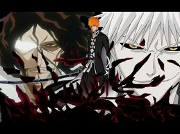
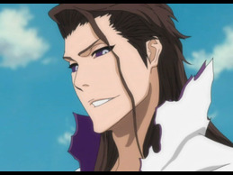
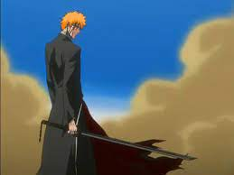
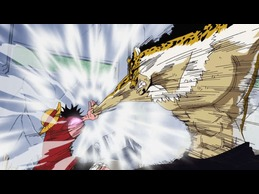
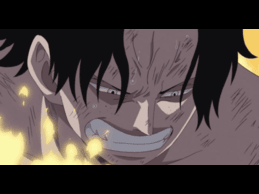
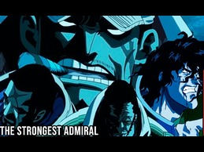

With the Thousand Year Blood War Arc releasing, how does the predecessor fare?
As one of the big three in anime, Bleach is widely popular for many reasons. With a dynamic story and thrill-seeking action packed into this anime,
its no surprise the fans have been begging for a return ever since the show started in 2004 and ended 2012. Bleach is an extremely interesting anime which keeps the
watcher engaged with the various fight scenes, perfected villianry and overall premise which can easily be given a 10/10. However, the anime does contain 45% filler in which
some would not find to be interesting and rather a bore to watch however, looking past this, the Animatrix still gives this anime a top tier rating!



Intense moments within the show!
One Piece Animatrix Review
How enjoyable is the journey to become a Pirate King?
Simple answer. Extremely. Toei Animation have absolutely smashed it out the ball park with One Piece. The pacing, fights and thrill to the more story focused,
sombre moments, it all fits together lie a puzzle to create a 10/10 anime experience. There are no dull moments with this show, everything is created to entice the
watcher for the ultimate anime experience. A must watch!



Memorable moments from the series.
JoJo's Bizarre Adventure
Manga classic to take over the anime world
Starting the manga in 1983, JoJo's has been around for a very long time. But to no disappointment that's for sure! JoJo's is an anime series that is currently split into
6 different parts, each part featuring a different protagonist from the last whilst all sharing the nickname "JoJo". The premise requires JoJo to rid the world of user's who possess
evil entities known as "Stand's" which are a threat to the planet. Tons of action and top tier voice acting make this show a one of a kind that must be watched now!